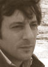
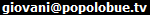

RUFO GUERRESCHI
Socio Fondatore e Direttore Esecutivo
- Skype: rguerreschi - Cell./SMS: +39 3357545620
Rufo Guerreschi ha ricoperto posizioni alto dirigenziali tecniche e commerciali presso fornitori di complessi sistemi informatici web a New York e Seattle. Presso tali aziende, ha coordinato progetti di applicazioni web che hanno impiegato oltre 20 programmatori, ed ha in seguito diretto la pre-commercializzazione, la vendita e l'installazione a livello mondiale di soluzioni software basate sul web del valore di svariati milioni di dollari per operatori di telefonia mobile globali quali Vodafone, Telefonica, DoCoMo etc.
Ha completato la sua formazione attraverso programmi di perfezionamento post-laurea in scienze politiche e tecnologie informatiche presso le Università di Princeton e di Rutgers.
E' da lungo tempo un attivista politico internazionale nel campo della democratizzazione globale, collabora con numerose ONG del settore ed ha fondato l'Associazione Sammondano, la ParTecs - Tecnologie Partecipative e la Fondazione Telematics Freedom, tutte basate a Roma.
 ARTURO DI CORINTO
Socio e Direttore della Comunicazione
- Skype: arturodicorinto
Giornalista, collaboratore dei quotidiani Il Sole24ore, La Repubblica, Liberazione; saggista, autore di "Hacktivism. La libertà nelle maglie della rete"; documentarista per RaiTre, autore di "Revolution OS II", il primo film italiano sull'open source.
Psicologo cognitivo, docente di Comunicazione Mediata dal Computer all'Università di Roma La Sapienza dal 2003. Membro della Commissione per la promozione dell'Open Source della Provincia di Roma presso l'assessorato alla Cultura e alla Comunicazione. Membro del Comitato consultivo permanente sul diritto d'autore presso il Ministero per i Beni e le attività culturali.
Esperto di Comunicazione pubblica, ideatore e responsabile del portale Culturalazio.it, lavora per il CNIPA - Centro Nazionale per l'Informatica nella Pubblica Amministrazione.
GIOVANI SPAGNOLO
Direttore Tecnico
 - Skype: giovani_spagnolo - Cell./SMS: +39 3931246699
Giovani Spagnolo si è laureato in Informatica presso la Pontificia Università Cattolica del Rio Grande do Sul (PUCRS) a Porto Alegre, in Brasile, ed ha conseguito un MBA in Gestione Strategica d'Impresa presso l'Università di San Paolo (USP). Autore di articoli di informatica e sul Software Libero per il Portale dell'Accademia degli Imprenditori, è uno dei fondatori e attivista del "Progetto Software Libero Brasile", ed ha partecipato all'organizzazione del più grande Forum sul Software Libero dell'America Latina (FISL), che si tiene annualmente a Porto Alegre.
Giovani ha iniziato la sua carriera nel 1998, a Porto Alegre, lavorando per PROCERGS, la società di elaborazione dati dello stato del Rio Grande do Sul. Avendo acquisito una solida esperienza di pianificazione e analisi di progetti web, ha fondato in seguito la sua azienda di Software Libero, di nome WebYES! e si è trasferito a Roma nel 2004 per coordinare un progetto di inclusione digitale promosso dal Consorzio Gioventù Digitale e dal Comune di Roma. Dal 2006 è Direttore di Programma della Telematics Freedom Foundation.